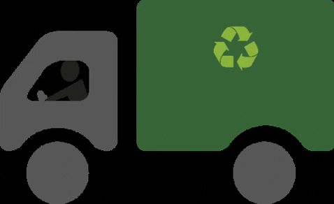

A sustentabilidade é a capacidade de um ser humano cumprir com as necessidades do presente sem comprometer as mesmas das gerações futuras. O desenvolvimento sustentável tem como objetivo a preservação do planeta e o atendimento das necessidades humanas. A importância da sustentabilidade transcende o conceito de uma prática ambiental isolada; ela é o alicerce para um futuro onde o equilíbrio entre a natureza e a sociedade é a principal chave.
A reciclagem é uma prática essencial para a sustentabilidade na sociedade. Além de ajudar a preservar o meio ambiente, evita o acúmulo de lixo e o descarte inadequado nos rios e no solo. A prática da reciclagem também impede que haja retiradas de algumas matérias-primas em excesso, o que contribui com a manutenção sustentável no meio ambiente.
Separar o lixo é uma atitude simples que todas as pessoas podem fazer em suas casas, auxiliando no trabalho da coleta seletiva e ajudando a reduzir a contaminação no meio ambiente, além de evitar a disseminação de doenças.
Por meio de recursos tecnológicos, desenvolvemos um jogo para a conscientização do descarte correto do lixo no ambiente escolar. A realização do jogo foi usada a plataforma Scratch que é baseada em blocos, trazendo mais dinâmica para os jogadores.